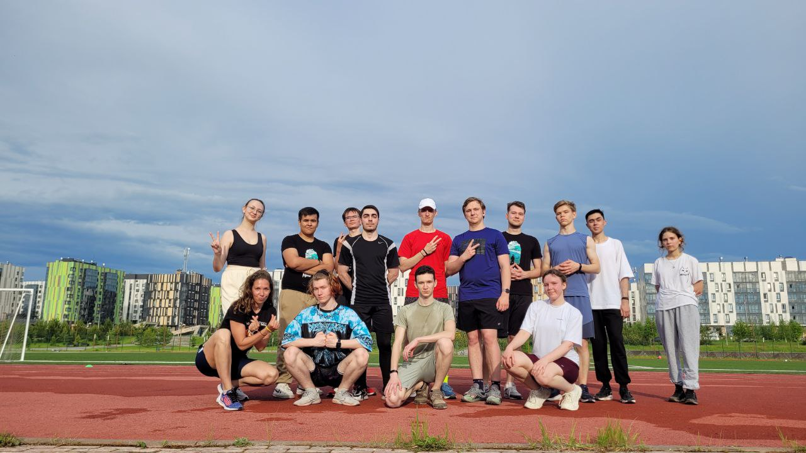
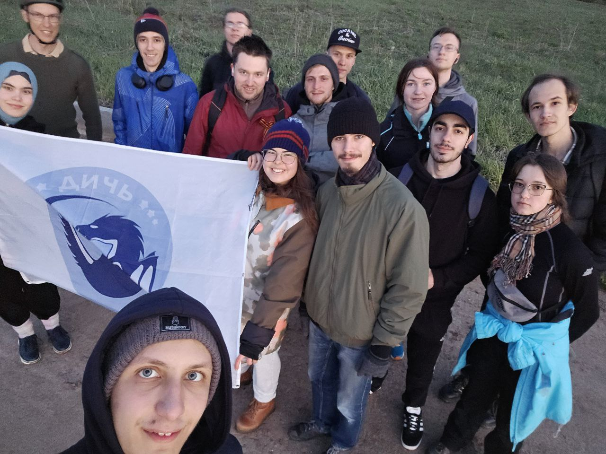

My first crossfit workout this summer
Today I went to my first crossfit workout this summer. It was outside. Despite the overcast weather it was very stuffy. The workout started with a 25 minute run and then continued with leg exercises. I don't often train my endurance, and especially in this hot and sweltering weather, it was very hard for me to train. The next day I couldn't get out of bed because I had overworked my legs and they were sore. But I'm still thinking about going to my next workout every other day, sometimes it helps to stretch my legs better so they hurt less.
Now in the summer I mostly train outside, I'm used to working out in the gym and lifting heavier weights than running and endurance training, so my plan is to get 14 hours as soon as possible to close my physical course and then train for fun.
June 4, 2024

A four-hour surprise walk
I had planned for the walk with the Rage Hiking Club to last 2 hours tops, but as we got closer to the second hour I realized we were going to be walking a lot more.
These 4 hours were very interesting, we talked about different topics and also tried to pass through impassable places. We also walked along the bank of the Volga river and saw houses that can only be accessed by boat from the river side. I also visited Vedenskaya and Petropavlovskaya sloboda for the first time.
At the end I was already very exhausted, as I had not eaten before the training and had not taken anything to eat.
When I came back I dropped dead and went to bed without finishing some of my work, but I think this adventure was worth it!
May 6, 2024